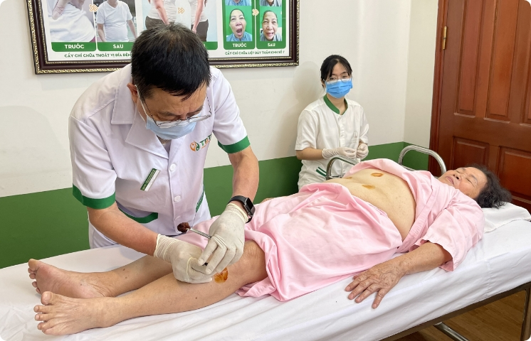

GÌN GIỮ, KẾ THỪA, PHÁT TRIỂN - Đây là ba sứ mệnh của Đông Phương Y Pháp đối với nền y học cổ phương Đông và trùng hợp đây cũng là ba giai đoạn mà thương hiệu đã trải qua. Đứng trước những thách thức, khó khăn với làn sóng hội nhập, phát triển của y học hiện đại, theo thời gian Đông Phương Y Pháp vẫn đem đến những giá trị trường tồn, tinh hoa của người xưa vẫn đang được ứng dụng để chữa những căn bệnh thời hiện đại một cách hiệu quả.
Lịch sử hình thành
-
Năm 2013
Phòng trị liệu của Trung tâm Nghiên cứu và Ứng dụng Thuốc Dân Tộc -
Năm 2015
Phòng trị liệu của Trung tâm Nghiên cứu và Ứng dụng Thuốc Dân Tộc -
Năm 2017
Phòng trị liệu của Trung tâm Nghiên cứu và Ứng dụng Thuốc Dân Tộc -
Tháng 10/2017
Phòng trị liệu của Trung tâm Nghiên cứu và Ứng dụng Thuốc Dân Tộc -
Năm 2019
Phòng trị liệu của Trung tâm Nghiên cứu và Ứng dụng Thuốc Dân Tộc -
Năm 2022
Phòng trị liệu của Trung tâm Nghiên cứu và Ứng dụng Thuốc Dân Tộc
01/ Gìn Giữ
Tiền thân là phòng trị liệu của Trung tâm Nghiên cứu và Ứng dụng Thuốc Dân Tộc, Đông Phương Y Pháp những năm đầu thành lập chỉ đơn thuần là các dịch vụ điều trị các bệnh lý liên quan đến chứng đau nhức và một phần hỗ trợ trường hợp bệnh nhân điều trị bằng thuốc có nhu cầu làm trị liệu. Với vai trò nhỏ nhoi như vậy, phòng trị liệu lúc bấy giờ chỉ có hai giường trị liệu, 2 kỹ thuật viên (1 nam, 1 nữ), bác sĩ chỉ định xoa bóp - bấm huyệt, còn châm cứu, cấy chỉ được trực tiếp Tiến sĩ Nguyễn Thị Vân Anh - Nguyên Trưởng khoa Nội BV YHCT Trung Ương lúc đó là Giám đốc chuyên môn Thuốc Dân Tộc thực hiện.
Dù chưa được đầu tư phát triển nhưng những tinh hoa y thuật của phương Đông như châm cứu, bấm huyệt, cứu ngải... vẫn không bị lãng quên từ những bước đi đầu tiên. Dù trải qua hàng nghìn thế kỷ, trị liệu phương Đông không thể thiếu mỗi khi nhắc đến y học cổ truyền dù ở quốc gia nào.
02/ Gìn Giữ
Khi cơ sở còn ở số 35, ngõ 75, Vĩnh Phúc, Ba Đình, Hà Nội, mặc dù chỉ là phòng trị liệu nhỏ tuy nhiên với uy tín của Thuốc Dân Tộc lượng bệnh nhân không hề nhỏ, mỗi ngày đón tiếp từ 20 - 30 lượt. Năm 2015, CTCP Nghiên cứu và Ứng dụng Thuốc dân tộc quyết định thành lập Trung tâm Ứng dụng Đông Phương Y Pháp, Giám đốc là Tiến sĩ Nguyễn Thị Vân Anh cùng đội ngũ kỹ thuật viên lành nghề để đáp ứng nhu cầu của người dân Hà Nội.
Sau khi chuyển về cơ sở 132 Ô Chợ Dừa, lượng bệnh nhân tăng lên đột biến cùng với hiệu ứng từ việc Cố Nghệ sĩ ưu tú Trần Hạnh đến chữa xương khớp đã khiến Trung tâm quá tải. Từ sự kiện này cùng với định hướng đầu tư và phát triển Thuốc Dân Tộc, đội ngũ lãnh đạo và các y bác sĩ nhận thấy cần có hướng đi cho Đông Phương Y Pháp độc đáo hơn nhưng vẫn phải đi từ gốc trị liệu không dùng thuốc.
Năm 2017, bác sĩ Doãn Hồng Phương - học trò xuất sắc của Cố Giáo sư Nguyễn Tài Thu được mời làm Giám đốc thay thế Bác sĩ Vân Anh. Người thầy của bác sĩ được ví là 'Thần kim', 'Vua châm cứu', thì trong nghề những đồng nghiệp gọi cô là 'cây kim vàng'.
Ngày 1/10/2017, Trung tâm Đông Phương Y Pháp tại Tp.HCM chính thức khai trương cơ sở, đánh dấu bước chuyển mình mạnh mẽ. Cơ sở vật chất khang trang, hội tụ đội ngũ bác sĩ - kỹ thuật viên lành nghề, mỗi ngày Đông Phương Y Pháp tiếp đón cao điểm lên đến 50 lượt khách hàng.
Thời đại nối tiếp thời đại, thế hệ nối tiếp thế hệ, Đông Phương Y Pháp trở thành địa chỉ trị liệu uy tín, những tinh hoa của y thuật phương Đông tiếp tục được cải tiến với những thủ thuật khéo léo chữa được những ca bệnh khó như tai biến, liệt, liệt dây thần kinh số 7...q
03/ Phát triển
Bước qua đại dịch Covid 19, không chỉ giới chuyên gia mà người dân cũng nhận thức được vai trò quan trọng của y học cổ truyền, sự kết hợp khéo léo giữa nhiều trường phái chăm sóc, chữa bệnh khác nhau. Lúc này, mô hình chăm sóc sức khỏe chủ động được nâng cao, Đông Phương Y Pháp mở chuỗi trị liệu không dùng thuốc với mục đích giúp cộng đồng nâng cao và phục hồi hậu covid. Đối tác của Đông Phương Y Pháp là các phòng khám y học cổ truyền tại Hà Nội và Tp.HCM có tiếng như Đỗ Minh Đường, Nhất Nam Y Viện ... ngoài ra, tại các cụm chung cư đông sẽ có phòng trị liệu của Đông Phương Y Pháp. Các phương pháp được áp dụng bài bản với cơ chế tự chữa lành.
Thành tựu nổi bật nhất và đang là hướng đi mới của Đông Phương Y Pháp phải kể đến Hệ giải pháp Ngũ Liệu Khang Kiện đang được ứng dụng trong điều trị, phục hồi và chăm sóc sức khỏe. Ngũ Liệu Khang Kiện có nghĩa là 5 liệu pháp đem lại sức khỏe cường tráng. Đây là hệ giải pháp đa trị liệu ĐẦU TIÊN và DUY NHẤT hiện nay tại Việt Nam. Vận dụng linh hoạt học thuyết Âm Dương - Ngũ Hành, kế thừa tinh hoa bí thuật y học cổ của các nước phương Đông như Trung Quốc, Nhật Bản, Hàn Quốc,... đội ngũ y bác sĩ của Đông Phương Y Pháp đã tìm ra nguyên tắc chữa bệnh, chăm sóc sức khỏe toàn diện giữa việc DÙNG THUỐC và KHÔNG DÙNG THUỐC. Hai trường phái trước là riêng biệt nhưng nay được liên kết chặt chẽ, đa trị liệu, tác động hiệp đồng.
Ngũ Liệu Khang Kiện là hệ giải pháp tổng thể quy tụ tất cả tinh hoa của y học phương Đông đem lại hiệu quả điều trị CAO NHẤT, thời gian điều trị NGẮN NHẤT, chăm sóc sức khỏe TỐT NHẤT gồm:

5 phương pháp điều trị và hỗ trợ điều trị tượng trưng cho ngũ hành (Kim, Mộc, Thủy, Hỏa, Thổ) tương sinh, hội tụ tinh hoa của vũ trụ, tinh hoa của y thuật, Ngũ Liệu Khang Kiện được ứng dụng theo nguyên tắc CÁ NHÂN HÓA đem lại CÂN BẰNG ĐỘNG cho con người. Hệ giải pháp đang áp dụng tại các cơ sở của Đông Phương Y Pháp với đội ngũ bác sĩ, chuyên gia đầu ngành, đại diện cho 5 liệu pháp gồm:

Lê Hữu Tuấn
Chuyên ngành: Nội/ Da liễu/ Nam khoa/ Nội tiết/ tim mạch/ Thận -Tiết niệu
Số năm kinh nghiệm: 10 năm
Lê Hữu Tuấn
Chuyên ngành: Nội/ Da liễu/ Nam khoa/ Nội tiết/ tim mạch/ Thận -Tiết niệu
Số năm kinh nghiệm: 10 năm
Lê Hữu Tuấn
Chuyên ngành: Nội/ Da liễu/ Nam khoa/ Nội tiết/ tim mạch/ Thận -Tiết niệu
Số năm kinh nghiệm: 10 năm
Cơ sở hoạt động
Hà Nội
Địa chỉ: Biệt thự B31 Ngõ 70 Nguyễn Thị Định
Chuyên gia/ Bác sĩ/ Kỹ thuật viên: 30
Thời gian làm việc: Từ 8h - 17h30 tất cả các ngày
trong tuần (thứ 2 - chủ nhật)
Liên hệ:
Hà Nội
Địa chỉ: Biệt thự B31 Ngõ 70 Nguyễn Thị Định
Chuyên gia/ Bác sĩ/ Kỹ thuật viên: 30
Thời gian làm việc: Từ 8h - 17h30 tất cả các ngày
trong tuần (thứ 2 - chủ nhật)
Liên hệ:
Cơ sở vật chất
Cống hiến và giải thưởng
Top 50 các Thương hiệu – Nhãn hiệu nổi tiếng năm 2018
Top 20 thương hiệu vàng Việt Nam năm 2019
Sản phẩm tin cậy, Dịch vụ hoàn hảo, nhãn hiệu ưa dùng 2017

Doanh nghiệp thực hiện tốt trách nhiệm an sinh xã hội và chăm sóc sức khỏe cộng đồng năm 2016
Sứ mệnh
Giữ gìn, kế thừa và phát triển tinh hoa y thuật phương Đông, Đông Phương Y Pháp sẽ mang lại những trải nghiệm dịch vụ điều trị bệnh bằng y học cổ truyền tốt nhất với người dân Việt Nam với phương châm Nam dược trị Nam nhân, Đông y liệu Đông bệnh
Tầm nhìn
Không chỉ lặng lẽ tồn tại cùng quần chúng, Đông Phương Y Pháp khao khát nâng tầm giá trị dân tộc bằng những tinh hoa y thuật độc quyền, riêng biệt, phát tiển mà vẫn giữ được bản sắc. Đông Phương Y Pháp cùng với sự phát triển của CTCP Bệnh viện Thuốc Dân Tộc đã có kế hoạch cho một bệnh viện y học cổ truyền tư nhân được đầu tư bài bản nhất, quy mô nhất vào năm 2025.
Cam kết
Tập trung vào khách hàng, lấy khách hàng làm trung tâm để phục vụ. Chúng tôi cam kết tận tâm đến tận cùng với khách hàng, luôn mang đến cho khách hàng những bài thuốc sản phẩm và dịch vụ tốt nhất với chi phí hợp lý nhất. Lợi ích của khách hàng, sức khỏe của người bệnh là tôn chỉ cho mọi hoạt động của chúng tôi.